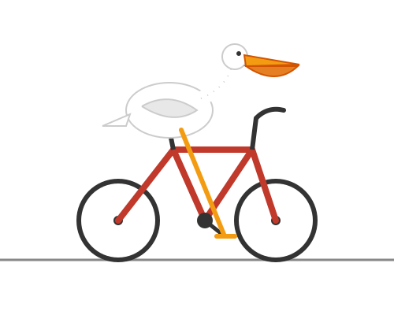
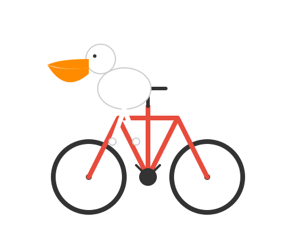

Qwen3.8-27B at 4-bit, served by oMLX on a Mac Studio at roughly 19 tokens/second. Knowledge and reasoning evals, a Korean translation benchmark, an SVG drawing test, and a browser tool the model wrote itself. Every number here was verified independently — in one case that changed the result by 83 points.
1,014 questions with thinking enabled, roughly 13 hours of continuous generation.
| Suite | Score | Correct | Time | |
|---|---|---|---|---|
| mmlu | 87.6% | 219/250 | 220 min | |
| arc_challenge | 97.6% | 244/250 | 35 min | |
| truthfulqa | 91.5% | 183/200 | 212 min | |
| gsm8k | 96.0% | 144/150 | 80 min | |
| humaneval | 95.7% | 157/164 | 242 min | re-graded, oMLX reported 12.2% |
oMLX scored this model 12.2% on HumanEval. Its code extractor
handles only a fenced block or a response beginning with def; with thinking enabled the model
opens with reasoning prose, so the harness fell through to grading prompt + entire reasoning trace
as if it were Python. That artifact does not compile, so almost everything failed. Re-executing the model's
actual code against the official tests gives 95.7% — 135 of 144 "failures" were correct all along.
The remaining 9 are genuine: 5 assertion failures and 2 truncations.
FLORES-200 devtest, 200 sentences, 3.0s per sentence. chrF++ leads because it compares character n-grams and needs no tokenizer — the right choice for Korean. BLEU is greyed: without a morphological tokenizer it penalises valid particle and ending variation.
chrF++ understates the model badly. COMET — a learned metric that judges adequacy rather than string overlap — puts it at 0.904, with the worst sentence still at 0.75. The samples show why: the lowest chrF++ sentence is one where the translation is more faithful than the reference.
Simon Willison's test — "generate an SVG of a pelican riding a bicycle." The interesting
result was not the drawing. With thinking enabled the model spent 16,384 tokens narrating a plan and
never drew anything, twice. With enable_thinking: false it produced a complete SVG in
746 tokens: 22× fewer, and the only setting that yielded art.


The agent version connects the bird to the machine — a leg runs to the crank, a foot rests on the pedal. The direct version draws both subjects competently but never joins them.
Asked for a browser CSV editor with XLSX export, the model wrote a working one in 6 agent turns
— including a ZIP writer with CRC32 implemented from scratch, since a real .xlsx is a ZIP of
XML parts. It later wrote the reader too, handling DEFLATE and shared strings. Everything below was verified by
running the code, not by reading it.
Import a CSV or XLSX, edit cells in place, export either format. Runs entirely in your browser, no libraries. The XLSX reader and writer are the model's code; only the file-input wiring is hand-written.